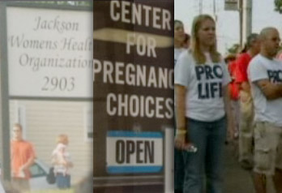
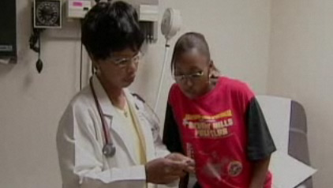

Summer on the Road
During the months of July and August, Aronson and Baxt spent many weeks on the road. They filmed interviews with experts like Bonnie Scott Jones, attorney with the Center for Reproductive Rights in New York, which represented the Jackson clinic. They talked to Professor Jack Balkin, constitutional law specialist at Yale Law School, and to Peter Samuelson, president of a pro-life, non-profit law firm named Americans United for Life (AUL). They interviewed Ted Joyce, professor of economics and finance at Baruch College at the City University of New York (CUNY), and William Saletan, chief political correspondent for Slate magazine and author of a book on abortion politics.
The expert interviews, conducted all across the country, were essential to Aronson’s plan to tell the legislative history of abortion. But most of the Frontline team’s interviews—seven weeks’ worth of shooting—were in Mississippi and the adjoining state where the clinic was located. Those interviews focused on caregivers and patients; they put a human face on the legislative story. Aronson had settled on four principal film sites: outside the Jackson clinic (since they were not allowed inside); a public health clinic in the rural Mississippi Delta community of Clarksdale; a Christian-affiliated, pro-life “crisis pregnancy center” in Jackson which counseled women with unplanned pregnancies; and the abortion clinic in a neighboring state.
Win trust. In Mississippi, the Frontline team had first to gain the confidence of pro-life activists, who viewed with suspicion a crew based in New York City. Moreover, Aronson was filming in the midst of a raging national debate over whether or not the Corporation for Public Broadcasting—which channeled federal funds to public broadcasters—was guilty of liberal bias and whether it deserved continued public funding.[12] “We came from public television, we lived in the east, we lived in New York City, and we weren’t professing to be pro-life and we weren’t saying we were Christians,” recalls Aronson. “So right away we had a lot of distrust.”
Thanks in part to personal connections Aronson had made while working on The Jesus Factor, members of the pro-life groups eventually agreed to talk to her. The first important figure to cooperate was the president of Pro-Life Mississippi, Terri Herring. “Terri was amazing because she actually just sort of let us in in a way that we weren’t quite expecting,” remembers Aronson. Due to her schedule, Herring was also the first on-camera interview that the team filmed in Mississippi. This was not ideal from a producer’s point of view; it’s preferable to record key interviews later in the process when questions can be fine-tuned. But Aronson got the material she needed. © WGBH Educational Foundation

The team also spent time at the Center for Pregnancy Choices, a pro-life clinic in Jackson for pregnant women. There were 26 in Mississippi and some 2,000 throughout the country—some of which received federal funding. Aronson found that the very existence of the centers challenged some of her own preconceptions. “Before I started my research on the abortion issue, I didn’t even know those places existed. The amazing thing about this whole process is when you learn something just completely surprising,” she notes. Aronson’s crew visited the largest center in the state, a Christian-based organization that was privately funded.
© WGBH Educational Foundation

Aronson had hoped for a specific scenario in Clarksdale. The town was near a state border. “What we were hoping to do, our dream, was to find—and this is why we chose this town—a few women who were seeking abortions and follow them across the border,” says Aronson. “That didn’t materialize. We waited and waited and waited...”
Footnotes
[12] David Boaz of the conservative Cato Institute observed July 11, 2005, that “there has never been a Frontline documentary on the burden of taxes, or the number of people who have died because federal regulations keep drugs off the market, or the way that state governments have abused the law in their pursuit of tobacco companies, or the number of people who use guns to prevent crime. Those ‘hard questions’ just don’t occur to liberal journalists.”